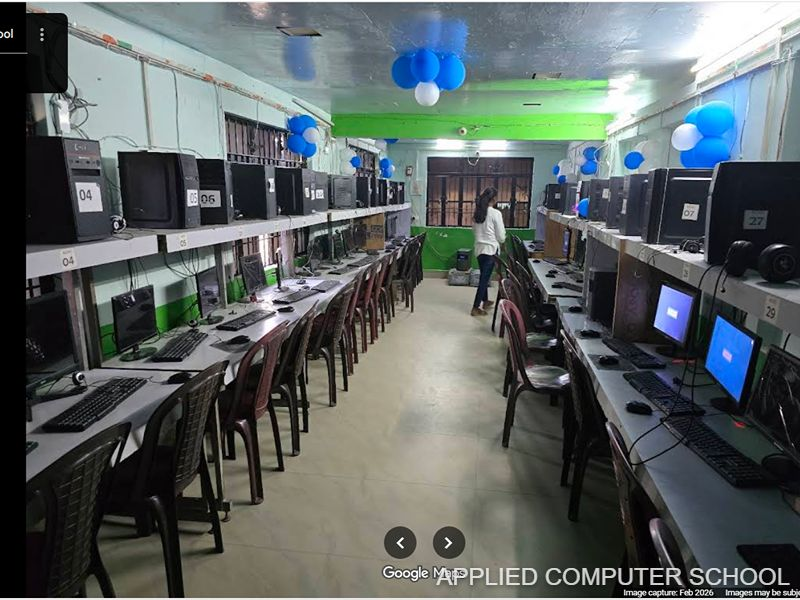
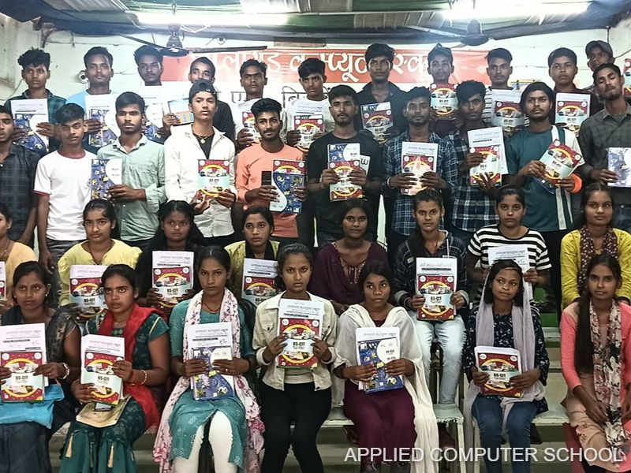
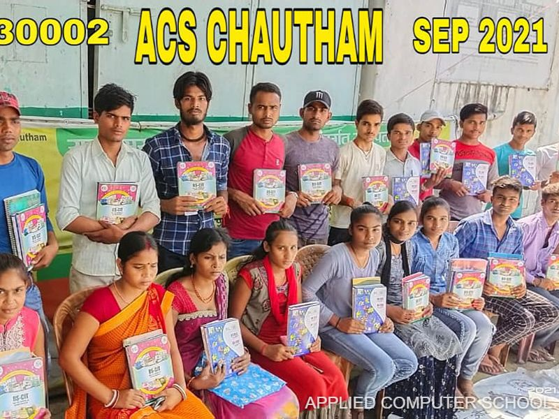
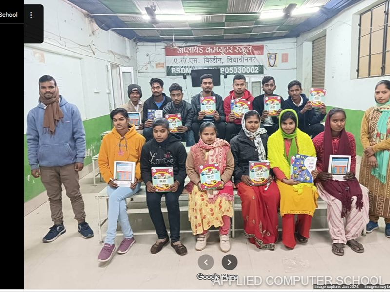

ACS
Applied Computer School™
Vocational and digital skill development focused on practical learning and employment readiness.
Explore learning →Freedom Fighter Gangadhar Prasad Memorial Trust works at the intersection of rural education, vocational skills, digital learning, agriculture support and future workforce development.
The Trust carries forward the values associated with Gangadhar Prasad through practical public service—especially for rural families, learners, workers and communities that need accessible opportunities.
FFGPMT begins community-focused work including vegetable seedling distribution and rural livelihood support.
Vegetable seedlings are distributed to farming families. Programme records indicate approximately 6,000 farmers reached to date.
Vocational and digital skill development expands through practical, employment-oriented learning initiatives.
A dedicated digital-learning programme and website at acs-aidigitalmaster.org. Trademark application filed in India under Class 41 on 20 March 2026 (Application No. 7606294).
acslearn.com develops as a free multilingual online learning platform supporting accessible, mobile-first vocational learning.
acsaarthi.com is being developed as an evidence-led professional driver skills and mobility workforce initiative.
Vocational and digital skill development focused on practical learning and employment readiness.
Explore learning →A dedicated digital-learning initiative for practical AI and digital capability development.
Visit website →Free multilingual online learning designed for mobile access, vocational skills and the Global South.
Visit ACS Learn →An upcoming professional driver skills and mobility workforce initiative built from employer evidence.
Visit ACSAARTHI →Community work established
Farmers reached through vegetable seedling support
Languages represented in current ACS learning work
Core online learning access through ACS Learn
Impact figures are programme records/estimates unless independently audited or otherwise stated.
Selected photographs already maintained in the FFGPMT repository can be used here to show real programme activity.




Khagaria, Bihar, India